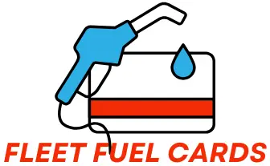

3741 Hickory Lane,
Washington, D.C.
Washington, D.C.
When it comes to fleet management, fuel expenses can be a significant portion of the overall budget. To effectively control and monitor fuel costs, many companies turn to fuel cards as a practical solution. These cards offer a convenient and efficient way for fleet managers to track fuel usage, manage expenses, and gain valuable insights into their fleet's fuel consumption patterns.
Fuel cards come in various types, each offering different features and benefits. The most common types include credit cards, prepaid cards, and charge cards. Credit cards allow fleet managers to make fuel purchases on credit, offering flexibility in managing cash flow. Prepaid cards, on the other hand, require fleet managers to load them with funds in advance, allowing for better control over fuel expenditure. Charge cards provide a balance between credit and prepaid options, offering a set credit limit that needs to be paid off within a specified timeframe. Understanding the different types of fuel cards is crucial in selecting the one that fits best with a company's fleet management needs.
Fuel cards have become an essential tool for efficient fleet operations. These cards provide numerous key features that help streamline fuel management and enhance overall productivity. One of the primary benefits of fuel cards is the ability to track fuel expenses in real-time. Fleet managers can easily monitor and analyze fuel consumption patterns, identify any discrepancies or irregularities, and take immediate corrective actions. With accurate and up-to-date data, they can make informed decisions regarding fuel budgeting, route planning, and vehicle utilization, ultimately leading to cost savings and improved operational efficiency.
Moreover, fuel cards offer extensive networks of affiliated fueling stations, ensuring that fleet vehicles can refuel conveniently and cost-effectively. These cards typically provide access to a wide range of fuel brands and locations, allowing drivers to choose the most suitable option based on their route or price preferences. This flexibility eliminates the need for time-consuming detours or costly deviations to find appropriate fueling stations. By offering competitive pricing and discounts, fuel cards also help decrease fuel expenses, resulting in substantial savings for fleet operators. Additionally, the centralized billing system of fuel cards simplifies financial management by consolidating all fuel-related transactions into a single, comprehensive invoice. This streamlined process reduces administrative burdens and enhances overall financial control for fleet operators.
When it comes to managing a fleet, the choice of fuel card can greatly impact overall efficiency and cost-effectiveness. There are several factors that fleet managers should consider when selecting the right fuel card for their operations. Firstly, it is important to assess the network and coverage provided by the fuel card provider. A comprehensive network ensures that fuel can be easily obtained from a wide range of locations, reducing the likelihood of drivers needing to deviate from their routes in search of a fuel station. Additionally, fleet managers should consider the accepted payment methods and transaction fees associated with the fuel card. Some cards may have additional fees for out-of-network purchases or late payment penalties, so understanding the terms and conditions is crucial for avoiding any unexpected charges.
Fuel cards have become increasingly popular in the realm of fleet management due to their numerous benefits. One major advantage is the ability to monitor and track fuel usage in real time. With fuel cards, fleet managers can gain insight into how much fuel each vehicle is consuming, allowing them to identify any anomalies or excessive usage. This data-driven approach can help in optimizing fuel consumption and identifying areas for improvement, ultimately leading to cost savings for the fleet.
Moreover, fuel cards also streamline the overall fuel management process. By using fuel cards, fleet managers can eliminate the need for drivers to carry cash or company credit cards for fuel purchases. This not only reduces the risk of theft or unauthorized expenses but also simplifies the accounting process. Fuel card usage can be directly integrated into the fleet management system, providing accurate and detailed reports on fuel expenditures. Additionally, with the integration of GPS technology, fleet managers can easily identify the nearest and most cost-effective fuel stations for their vehicles, further enhancing efficiency.
When it comes to comparing the fuel card programs offered by different providers, there are several key factors to consider. One important aspect is the network of fuel stations that the provider has partnerships with. This determines the accessibility and availability of fuel stations for cardholders. Providers with a wide network of fuel stations across the country offer greater convenience and flexibility for users, especially for those who often travel or have a larger geographical coverage for their business operations.
Additionally, the pricing structure and discounts offered by different providers can vary significantly. Some providers may offer fixed discounts on fuel prices, while others may offer volume-based or tiered discounts depending on the amount of fuel purchased. Understanding the pricing structure and calculating the potential savings based on your monthly fuel consumption is crucial in determining which fuel card program is the most cost-effective for your business. It is also important to consider any additional fees or charges that may be associated with the program, such as card issuance fees or transaction fees, as these can impact the overall value and affordability of the fuel card program.
Fuel costs can be a significant expense for businesses, especially those with large fleets of vehicles. The unpredictability in fuel prices makes it challenging to budget and control expenses effectively. However, fuel cards can be a valuable tool in managing fuel costs and improving budgeting for businesses.
One key benefit of using fuel cards is the ability to track and monitor fuel usage in real-time. With traditional payment methods, businesses often struggle to keep track of fuel purchases and usage accurately. Fuel cards enable businesses to gain visibility into their fuel spending by providing detailed reports on each transaction. This data allows businesses to identify any misuse or fraudulent activities, ensuring that fuel expenses are kept under control. Additionally, the real-time data can help businesses analyze fuel consumption patterns, enabling them to make informed decisions on how to optimize fuel usage and reduce costs.